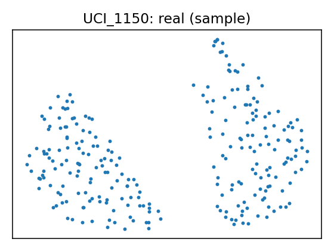
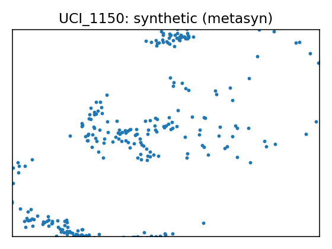

Data Report — UCI_1150
Source: UCI dataset 1150
SemMap JSON-LD: dataset.semmap.json · RDFa HTML
Overview
| Metric | Value |
|---|---|
| Dataset | UCI_1150 |
| Source | UCI dataset 1150 |
| Rows | 319 |
| Columns | 39 |
| Discrete | 8 |
| Continuous | 31 |
| SemMap | SemMap JSON-LD SemMap HTML |
| Missingness | Not modeled |
Variables and summary
| variable | inferred | dist |
|---|---|---|
| Gallstone Status | discrete | Gallstones absent [1]: 158 (49.53%) |
| Age | continuous | 48.0690 ± 12.1146 [20, 38.5, 49, 56, 96] |
| Gender | discrete | Female [1]: 157 (49.22%) |
| Comorbidity | discrete | 0: 217 (68.03%) 1: 99 (31.03%) 3: 2 (0.63%) 2: 1 (0.31%) |
| Coronary Artery Disease (CAD) | discrete | 1: 12 (3.76%) |
| Hypothyroidism | discrete | 1: 9 (2.82%) |
| Hyperlipidemia | discrete | 1: 8 (2.51%) |
| Diabetes Mellitus (DM) | discrete | 1: 43 (13.48%) |
| Height | continuous | 167.1567 ± 10.0530 [145, 159.5, 168, 175, 191] |
| Weight | continuous | 80.5649 ± 15.7091 [42.9, 69.6, 78.8, 91.25, 143.5] |
| Body Mass Index (BMI) | continuous | 28.8771 ± 5.3137 [17.4, 25.25, 28.3, 31.85, 49.7] |
| Total Body Water (TBW) | continuous | 40.5878 ± 7.9302 [13, 34.2, 39.8, 47, 66.2] |
| Extracellular Water (ECW) | continuous | 17.0712 ± 3.1619 [9, 14.8, 17.1, 19.4, 27.8] |
| Intracellular Water (ICW) | continuous | 23.6345 ± 5.3493 [13.8, 19.3, 23, 27.55, 57.1] |
| Extracellular Fluid/Total Body Water (ECF/TBW) | continuous | 42.2120 ± 3.2445 [29.23, 40.075, 42, 44, 52] |
| Total Body Fat Ratio (TBFR) (%) | continuous | 28.2750 ± 8.4444 [6.3, 22.025, 27.82, 34.81, 50.92] |
| Lean Mass (LM) (%) | continuous | 71.6382 ± 8.4376 [48.99, 65.165, 72.11, 77.85, 93.67] |
| Body Protein Content (Protein) (%) | continuous | 15.9388 ± 2.3347 [5.56, 14.465, 15.87, 17.43, 24.81] |
| Visceral Fat Rating (VFR) | continuous | 9.0784 ± 4.3325 [1, 6, 9, 12, 31] |
| Bone Mass (BM) | continuous | 2.8033 ± 0.5095 [1.4, 2.4, 2.8, 3.2, 4] |
| Muscle Mass (MM) | continuous | 54.2730 ± 10.6038 [4.7, 45.8, 53.9, 62.6, 78.8] |
| Obesity (%) | continuous | 35.8501 ± 109.7997 [0.4, 13.9, 25.6, 41.75, 1954] |
| Total Fat Content (TFC) | continuous | 23.4878 ± 9.6076 [3.1, 17, 22.6, 28.55, 62.5] |
| Visceral Fat Area (VFA) | continuous | 12.1716 ± 5.2622 [0.9, 8.57, 11.59, 15.1, 41] |
| Visceral Muscle Area (VMA) (Kg) | continuous | 30.4034 ± 4.4605 [18.9, 27.25, 30.4081, 33.8, 41.1] |
| Hepatic Fat Accumulation (HFA) | discrete | 0: 129 (40.44%) 2: 122 (38.24%) 1: 41 (12.85%) 3: 26 (8.15%) 4: 1 (0.31%) |
| Glucose | continuous | 108.6887 ± 44.8487 [69, 92, 98, 109, 575] |
| Total Cholesterol (TC) | continuous | 203.4953 ± 45.7585 [60, 172, 198, 233, 360] |
| Low Density Lipoprotein (LDL) | continuous | 126.6524 ± 38.5412 [11, 100.5, 122, 151, 293] |
| High Density Lipoprotein (HDL) | continuous | 49.4755 ± 17.7187 [25, 40, 46.5, 56, 273] |
| Triglyceride | continuous | 144.5022 ± 97.9045 [1.39, 83, 119, 172, 838] |
| Aspartat Aminotransferaz (AST) | continuous | 21.6850 ± 16.6976 [8, 15, 18, 23, 195] |
| Alanin Aminotransferaz (ALT) | continuous | 26.8558 ± 27.8844 [3, 14.25, 19, 30, 372] |
| Alkaline Phosphatase (ALP) | continuous | 73.1125 ± 24.1811 [7, 58, 71, 86, 197] |
| Creatinine | continuous | 0.8006 ± 0.1764 [0.46, 0.65, 0.79, 0.92, 1.46] |
| Glomerular Filtration Rate (GFR) | continuous | 100.8189 ± 16.9714 [10.6, 94.17, 104, 110.745, 132] |
| C-Reactive Protein (CRP) | continuous | 1.8539 ± 4.9896 [0, 0, 0.215, 1.615, 43.4] |
| Hemoglobin (HGB) | continuous | 14.4182 ± 1.7758 [8.5, 13.3, 14.4, 15.7, 18.8] |
| Vitamin D | continuous | 21.4014 ± 9.9817 [3.5, 13.25, 22, 28.06, 53.1] |
Fidelity summary
| model | backend | disc jsd mean | disc jsd median | cont ks mean | cont w1 mean | downstream sign match |
|---|---|---|---|---|---|---|
| metasyn | metasyn | 0.0637 | 0.0717 | 0.1279 | 3.5703 | 1 |
Privacy summary
| model | backend | n real | n synth | exact overlap rate | near duplicate rate eps | nn distance mean | k min | k pct lt5 | k map | rare qi reproduction rate | identifiability score | delta presence |
|---|---|---|---|---|---|---|---|---|---|---|---|---|
| metasyn | metasyn | 319 | 319 | 0 | 0.9969 | 0.0135 | 1 | 1 | 1 | 0 | 3 |
Models
| UMAP | Details | Structure | |||||||||||||||||||||||||||||||||||||||||||||||||||||||||||||||||||||||||||||||||||||||||||||||||||||||||||||||||||||||||||||||||||||||||||||||||||||||||||||||||||||
|---|---|---|---|---|---|---|---|---|---|---|---|---|---|---|---|---|---|---|---|---|---|---|---|---|---|---|---|---|---|---|---|---|---|---|---|---|---|---|---|---|---|---|---|---|---|---|---|---|---|---|---|---|---|---|---|---|---|---|---|---|---|---|---|---|---|---|---|---|---|---|---|---|---|---|---|---|---|---|---|---|---|---|---|---|---|---|---|---|---|---|---|---|---|---|---|---|---|---|---|---|---|---|---|---|---|---|---|---|---|---|---|---|---|---|---|---|---|---|---|---|---|---|---|---|---|---|---|---|---|---|---|---|---|---|---|---|---|---|---|---|---|---|---|---|---|---|---|---|---|---|---|---|---|---|---|---|---|---|---|---|---|---|---|---|---|---|---|
 |
Real data | ||||||||||||||||||||||||||||||||||||||||||||||||||||||||||||||||||||||||||||||||||||||||||||||||||||||||||||||||||||||||||||||||||||||||||||||||||||||||||||||||||||||
 |
Model: metasyn (metasyn)
Per-variable fidelity
Downstream metrics
Privacy metrics
|
|